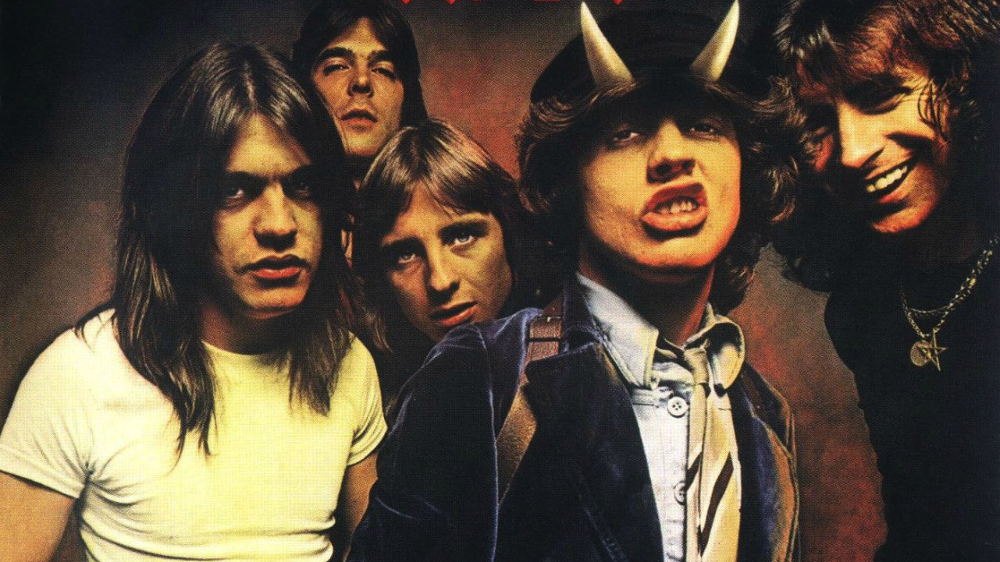

Historias e curiosidades da banda

AC/DC é uma banda australiana de rock formada em Sydney, Austrália em 1973, pelos irmãos escoceses Malcolm e Angus Young. O estilo musical da banda é normalmente classificado como hard rock e até mesmo blues rock. Mas seus membros sempre classificaram a sua música simplesmente como ,"rock and roll"
A banda já vendeu mais de 200 milhões de cópias em todo o mundo,incluindo 71 milhões somente nos Estados Unidos.Back in Black já vendeu cerca de 50 milhões de cópias mundialmente,das quais 22 nos Estados Unidos,fazendo dele o segundo álbum mais vendido de todos os tempos e o quinto mais vendido nos Estados Unidos.AC/DC ficou em quarto na lista da VH1 os "100 Maiores Artistas de Hard Rock" e foram considerados pela MTV a sétima "Maior Banda de Heavy Metal de Todos os Tempos"e em 2004, a banda ficou em 72.º na lista dos "100 Maiores Artistas de Todos os Tempos" feita pela revista Rolling Stone.
ACDC
For Those About to Rock (We Salute You)/ACDC
Voce pode conhcer mais sobre a banda Clique aqui!